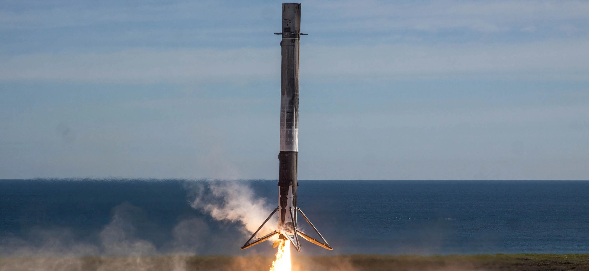

O Falcon 9 decola com Dragon para um teste em voo do sistema Crew Dragon

Falcon 9 decola com sua carga Iridium-8

Falcon 9 pousa em Cabo Caneveral
Falcon 9 lança Dragon para Estação Espacial Internacional do Complexo de Lançamento 39A

Clone dos motores Merlin do Falcon 9 durante a decolagem

O falcon 9 deixa um rastro de luz ao decolar da Base Aérea de Vandenberg